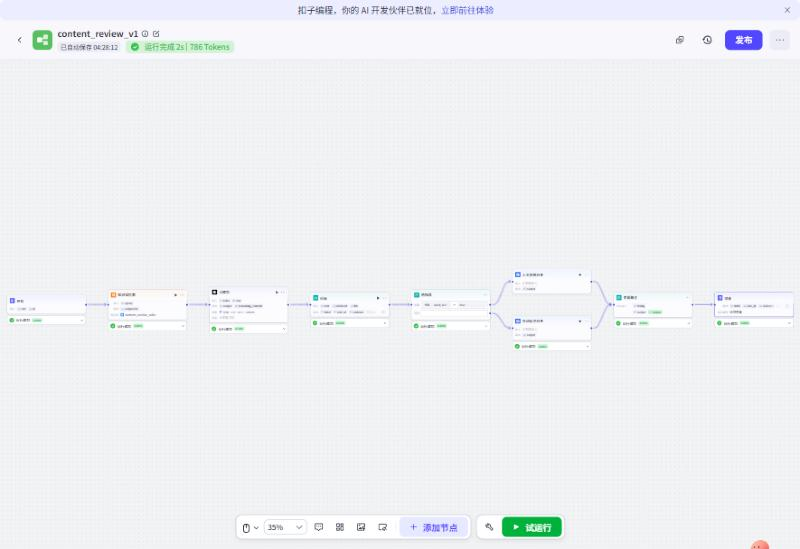

AI 应用 · 评测
内容审核预标注 Workflow
在扣子上搭的评论审核预标注流程：先检索规则，再让大模型判定，代码节点核对，拿不准的转人工。
扣子（Coze）知识库检索Python 代码节点pandas / scikit-learn
知识库检索规则库召回 3 条
大模型判定类别 · 规则编号 · 原文证据 · 置信度
代码核对规则编号与证据是否属实
人工复核置信度 < 0.7 或核对失败
自动标注其余
展开：问题、做法、结果
问题
审核或标注团队想先让模型做一遍预标注：把握大的直接入库，有疑问的交给人。所以要看两件事：分对了多少，以及送人工的那部分是不是真的该给人看。
做法
- 自建 120 条标注样本，4 个类别，开发 40 条、测试 80 条；用批处理工作流批量运行。
- 按类别统计 Precision / Recall / F1、漏判率、误判率和人工复核比例。
- 只看开发集的错例做归因：规则没被检索到、个人贬损和反讽没有覆盖。v2 只改提示词。
结果
- 测试集准确率 80.0% → 95.0%，Macro-F1 0.795 → 0.950，漏判率 25.0% → 5.0%，误判率保持 0。
- 人工复核比例 11.2%。
- 同时发现一个新问题：v2 的置信度分流失效了，见下面的复盘。
